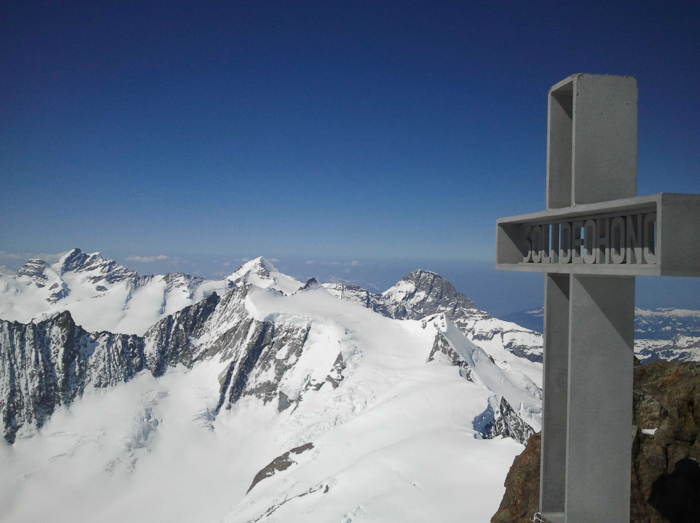
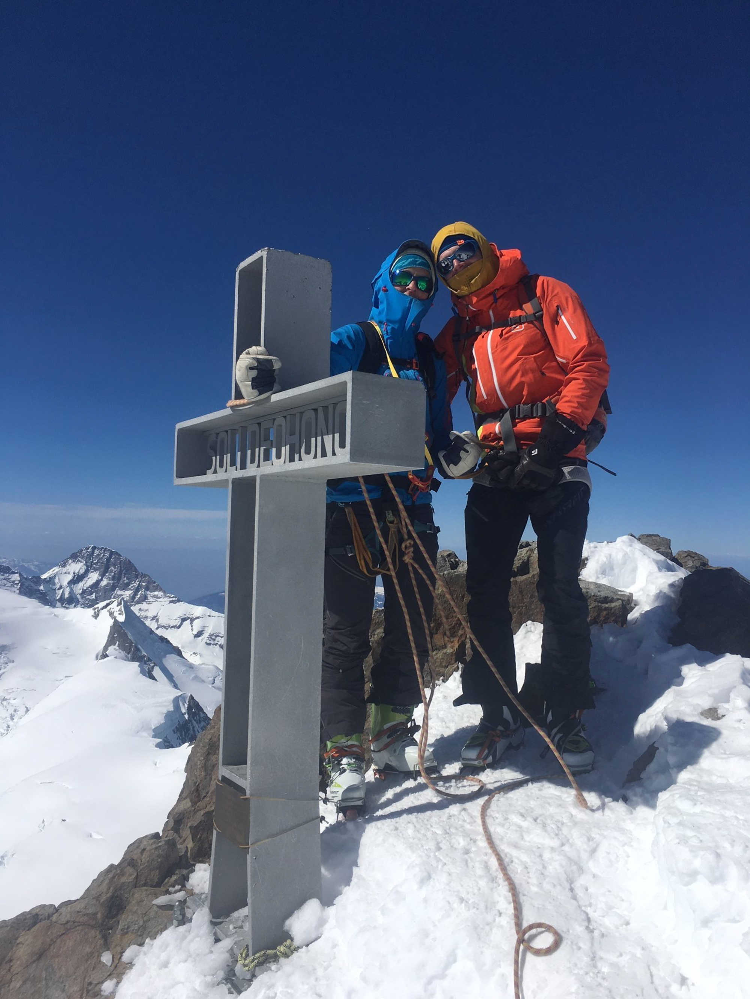

David Plüss zum 60. Geburtstag
Inmitten einer grandiosen Gipfel- und Gletscherlandschaft gelegen, ist das Finsteraarhorn mit 4274 m ü. M. der höchste Berg des Kantons Bern. In der imposanten Kette der Berner Alpen, die man bei klarem Wetter vom Mittelland und den Jurahöhen aus sieht, erkennt man es als spitzigen Zahn zwischen dem Dreigestirn von Eiger, Mönch und Jungfrau zur Rechten und der Pyramide des Schreckhorns zur Linken. Dieser Berg erhielt 1986 ein Gipfelkreuz. Uns interessiert: Wie kam es dazu? Wozu dient das Kreuz? Und was macht dieses mit dem Berg?
Wie es zum Gipfelkreuz kam
Am 17. September 1982 stellen drei Walliser Bergführerkameraden auf dem Gipfel des Finsteraarhorns einmal mehr mit Bedauern fest, dass diesem ein Gipfelkreuz fehlt, und sie erteilen sich den Auftrag, ein solches zu errichten. Da das Kreuz auf der Walliser Seite des Grenzgipfels zu stehen kommen soll, ist dafür nur die Baubewilligung der Munizipalgemeinde Fieschertal als Eigentümerin des Terrains erforderlich. An Pfingsten 1984 wird das 1.8 Meter hohe und 1.1 Meter breite Kreuz bei der Berghütte der Bergsteigerschule Fiesch am Fuss des Fieschergletschers im Rahmen einer feierlichen Bergmesse geweiht, zwei Jahre später, am 7. August 1986, fliegt es ein Helikopter auf den Gipfel des Finsteraarhorns, wo es südwestlich vom höchsten Punkt, mit Blick Richtung Wallis, auf einer vorbereiteten Verankerungsplatte festgeschraubt wird. Um den extremen Witterungsbedingungen an diesem Ort standzuhalten, sind die aus 20 Millimeter starkem Aluminium gefertigten Kreuzarme nicht massiv, sondern durchbrochen. In der Öffnung des Querarms stehen die Worte SOLI DEO HONOR. 1987 veröffentlicht Theodor Wyder (*1928), einer der Initianten, zum 175-jährigen Jubiläum der Erstbesteigung des Finsteraarhorns am 16. August 1812 ein Büchlein, in dem er die Geschichte des Gipfelkreuzes dokumentiert und ausführlich die religiöse Motivation reflektiert. Von dem der Aktion zugrundeliegenden religiösen Ernst zeugen insbesondere die Beschreibungen der Kreuzweihe, der Installation des Kreuzes auf dem Gipfel sowie des Moments, wie die an der Kreuzerrichtung Beteiligten nach ihrer Rückkehr vom Gipfel von einem alten Bergführer empfangen werden mit den Worten: «Der Schutz Gottes – jetzt auch von dorther – für euch und für uns alle.» (Wyder, 91).
Das Gipfelkreuz auf dem Finsteraarhorn, mit Eiger, Mönch und Jungfrau im Hintergrund. (Foto: © SchKrauler, 2.4.2012)
Wozu das Gipfelkreuz dient
Die Tradition, in der Landschaft – in Siedlungen, an Wegkreuzungen oder auf Passübergängen – Kreuze aufzustellen, geht bis ins Frühchristentum zurück, wobei diesen Kreuzen ausschliesslich religiöse Funktionen zukommen, als Schutzkreuze, Gedächtniskreuze, Dank- und Gelöbniskreuze, Sühnezeichen oder Andachtskreuze. Gipfelkreuze hingegen tauchen erst um 1800 auf, in Verbindung mit dem damals aufkommenden Alpinismus. Dabei lässt sich feststellen, dass diese oftmals primär aus zivilreligiösen oder touristischen Motiven errichtet wurden, als Siegeszeichen, Denkmäler, Orientierungspunkte oder Markierungen eines Ausflugsziels. Vergegenwärtigt man sich, dass Gipfelkreuze in katholischen Regionen eine weit grössere Verbreitung finden als in protestantischen, so lässt sich vermuten, dass das Religiöse gleichwohl noch eine Rolle spielt. Bestätigung findet dies darin, dass viele Kreuzerrichtungen nachweislich auf religiös motivierte Initiativen von Privaten oder kleinen Kollektiven zurückgehen, also etwa im Bedürfnis begründet sind, einen Andachts- oder Gedächtnisort zu schaffen. Auch der Errichtung des Gipfelkreuzes auf dem Finsteraarhorn liegen, gemäss seinem Chronisten, vorwiegend religiöse Motive zugrunde. Mit seiner Inschrift Soli Deo Honor (Gott allein die Ehre) will es an diesem herausragenden Ort, im Angesicht der Schönheit der Schöpfung, auf Gott hinweisen und zur Demut ermahnen. Es soll, so Wyder, «dort, wo es die Stille und Würde des Berges dem Menschen erlaubt, die Stimme Gottes deutlich zu hören […], den Bergsteiger mit Freude und Dank erfüllen; es soll als innige Verbindung mit ehrendem Andenken unserer Verstorbenen als Mittler zwischen uns und Gott die Verbindung festigen; es soll einladen, immer höher zu steigen, zur Verwirklichung, die unvergänglich und erhaben ist über Raum und Zeit des irdischen Lebens.» (Wyder, 98).
«Ehre, wem Ehre gebührt!» (Foto: © Peter Albert, 2.4.2019)
Was das Gipfelkreuz mit dem Berg macht
Das Finsteraarhorn kam über Jahrmillionen ganz gut ohne Gipfelkreuz aus. Und jetzt, wo eines auf ihm steht, fragt man sich, ob es dieses wirklich braucht und was das Kreuz mit dem Berg macht. Die einen sagen: Es verschandelt die Natur. Es beeinträchtigt die Erfahrung der Einsamkeit, Stille und Erhabenheit, die wir in der Wildnis des Hochgebirges suchen. Es nimmt den Gipfel für die christliche Religion in Beschlag, der wir uns nicht zugehörig fühlen. Andere ergänzen: Das Kreuz ist unnötig. Wir erleben hier oben Gott – oder nennen wir es eine höhere Kraft – unmittelbar, in der Betrachtung der Schönheit der Natur, im Spüren des intensiven Lichts, in der Konfrontation mit Grenzerfahrungen. Und dritte wenden ein: Da wir nun mal in einem christlich geprägten Land leben, wird man hier oben wohl noch an unseren christlichen Gott erinnern dürfen! Gipfelkreuze geben immer wieder Anlass für kleine Kulturkämpfe. So war auch das Kreuz auf dem Finsteraarhorn zeitweise mit tibetischen Gebetsfahnen geschmückt, was wohl als Versuch gedeutet werden kann, die monoreligiöse Besetzung des Ortes multireligiös zu öffnen. Andere hatten das Bedürfnis, die christliche Botschaft des Kreuzes zu stärken durch Anbringung einer zusätzlichen Tafel mit dem Bibelvers «So sehr hat Gott die Welt geliebt, dass er seinen eingeborenen Sohn gab. Damit jeder, der an ihn glaubt, nicht verloren geht, sondern ewiges Leben hat.» (Joh 3.16). Das Gipfelkreuz auf dem Finsteraarhorn macht deutlich: Theologisch bedeutsam ist ein Ort nicht per se, sondern nur, wenn Menschen ihm diese Bedeutung zuschreiben. Die Errichtung eines Gipfelkreuzes ist als kulturelle Setzung eine solche Form der Zuschreibung. Doch ist es nur eine unter vielen möglichen Formen. Auch für jemanden, der Gipfelkreuze ablehnt, kann ein Berg als Ort der Gotteserfahrung theologisch bedeutsam sein. Bleibt noch das Phänomen zu erwähnen, dass dort, wo es auf einem Berggipfel ein Gipfelkreuz hat, sich Berggängerinnen und Berggänger gerne mit diesem zusammen ablichten lassen, wobei man sich fragen kann, welche Funktion in diesen Fotos dem Gipfelkreuz zukommt. Ist es nur die des Beweises, dass man zuoberst gewesen ist? Oder spielen vielleicht auch religiöse Motive eine Rolle?
Johannes Stückelberger ist emeritierter Dozent für Religions- und Kirchenästhetik an der Theologischen Fakultät der Universität Bern und Titularprofessor für Neuere Kunstgeschichte an der Universität Basel.
Weitere Artikel von {{ author.author }} finden Sie hier:
Beitragsbild/Einstiegsbild: Finsteraarhorn, vom Bachsee oberhalb Grindelwald aus. (Foto: Friedrich-Karl Mohr, CC BY-SA 3.0 de, via Wikimedia Commons, 21.9.2017)
Zur Vertiefung:
- Wyder, Theodor: Finsteraarhorn. Von der Erstbesteigung zum Gipfelkreuz, Disentis 1987.
- Anker, Daniel (Hg.): Finsteraarhorn. Die einsame Spitze, Zürich 1997.
- Stückelberger, Johannes: «Gipfelkreuze», in: Heilige Landschaft - Heilige Berge (Akten des Achten Internationalen Barocksommerkurses 2007), hg. von der Stiftung Bibliothek Werner Oechslin Einsiedeln, Zürich 2014, 308–317.